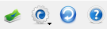
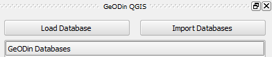
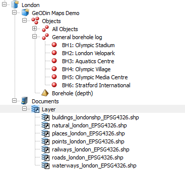
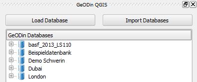

After installing the plugin in QGIS the plugin buttons are added to the toolbar.  The flag shows the current plugin operating language and is free to choose. Preliminary only the languages english and german are available. A right docked window opens with a click on the GeODin button in the toolbar.  A click on the button "Load Database" allows to load a database from the computer's file system.  The button "Import Databases" reads the windows registry and loads the registered databases.  This method only shows databases, which were created with GeODin earlier. Other databases, which might were added by manipulation of the geodin.ini file, receive no consideration due to the fact that they are not listed in the windows registry. A database is not loaded in QGIS, if the database was deleted from the file system. However there might be a reference in the windows registry, if the database connection was not deleted in GeODin. The view copies the visualisation of the GeODin object manager.